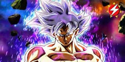

Es el primer hijo de Son Gokū y Chi-Chi, hermano mayor de Son Goten, esposo de Videl y padre de Pan. Es mitad Saiyan y mitad humano. El nombre de Gohan es un juego de palabras entre la palabra "gohan" (御飯, comida, arroz en japonés) y el nombre de su padre.
En la saga de Cell tomó un rol importante ya que el terminó vencedor con la batalla con Cell. En la saga de Buu también tomó un rol importante en una de las batallas con Buu en la cual despertó su poder escondido gracias al supremo Kaio-Sama de hace 15 generaciones.
En la saga de Dragon Ball Super inicialmente tiene un papel secundario al haberse alejado de las artes marciales y dedicándose a ser un erudito, pero a pesar de no entrenar puede transformarse como Super Saiyan. Gohan aún utiliza su traje de Gran Saiyaman ya que Videl se lo permite y disfruta de sus poses ridículas para algunos; tiene un gran cariño hacia Videl y su hija Pan, ya que él nunca se rendiría ante ellas tal como lo dijo Videl en el capítulo 74.
Pasa a tener un papel principal al ser uno de los 10 guerreros participantes. Entrenó con Piccolo y sacó su poder dormido para luego tener una batalla con su padre, en la que peleó con todo su poder pero fue derribado por Goku.
Hubo una época, hace muchos años, en la que poco a poco Son Gohan parecía estar destinado a tomar las riendas de "Dragon Ball". La victoria sobre Cell, confirmándose en ese entonces como el guerrero 'Z' más poderoso de todos - con diferencia además -, pareció establecer por completo su estatus como nuevo protagonista - pues Goku además perdía la vida en ese entonces -. No obstante, esta situación fue revertida en el arco de Majin Buu, donde a pesar de contar con protagonismo, quedó a la sombra de su padre. Ahora, especulan con que "Dragon Ball Super" pueda darle una nueva oportunidad.
La nueva técnica desarrollada por Son Gohan. Claramente, sin haber realizado ningún tipo de entrenamiento resulta difícil imaginar que este hubiera sido capaz de dar forma a dicha habilidad de manera repentina. Así pues, a pesar de que a día de hoy parece claro que todo protagonismo en torno a las batallas se encuentra plenamente centrado en Goku y Vegeta, no deberíamos descartar que el hijo del primero acabara por dar un paso adelante.
Al comienzo de "Dragon Ball Super", Son Gohan se ve desprovisto de toda intensidad que poseyera en su momento. Aquel inmenso poder que una vez latiera en el adolescente desaparece al completo para dejarnos con lo que parece ser incluso un mero humano de mayor poder que la media de humanos 'Z'. Sin embargo, en la fase final de "Dragon Ball Super" (anime) este recupera su forma mística - o definitiva - y con ello una gran parte de su poder perdido.
 |
 |
|
 |
 |
 |
 |